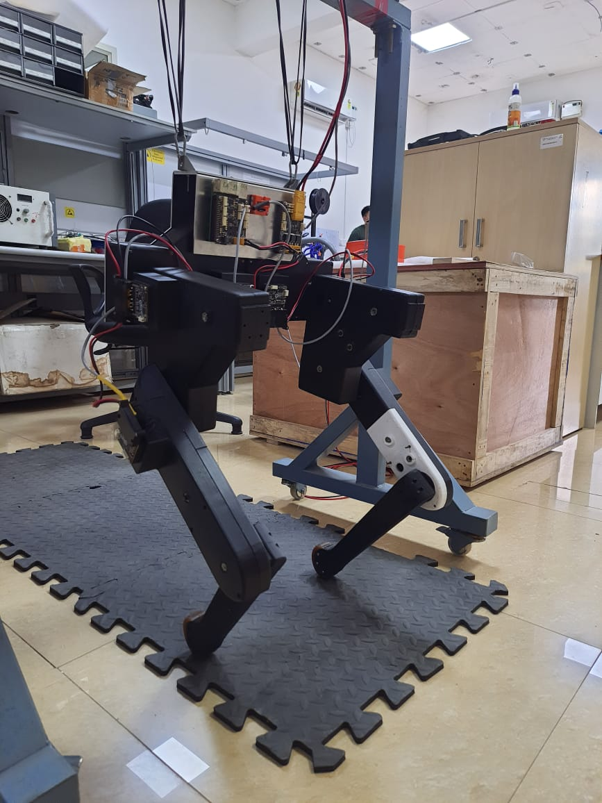

Research Summary
I like to focus on creating robust control strategies for legged Locomotion using Reinforcement learning and optimization.
Interests: Optimization, Reinforcement Learning, State Estimation, and Legged Locomotion.
Publications
-

Abstract: This paper introduces a new dynamic biped, the Stoch BiRo. The Stoch BiRo exploits tailored mechanical design to enable simple control strategies for dynamic locomotion and features high-bandwidth proprioceptive actuators to manage physical interaction with the environment. A new leg design is presented that includes proprioceptive actuation on the abduction/adduction degrees of freedom in addition to an expanded range of motion on the hips and knees. To make full use of these new capabilities, general balance and locomotion controllers for Cheetah 3 are presented. These controllers are embedded into a modular control architecture that allows the robot to handle unexpected terrain disturbances through reactive gait modification and without the need for external sensors or prior environment knowledge. The efficiency of the robot is demonstrated by a low Cost of Transport (CoT) over multiple gaits at moderate speeds, with the lowest CoT of 0.45 found during trotting. Experiments showcase the ability to blindly climb up stairs as a result of the full system integration. These results collectively represent a promising step toward a platform capable of generalized dynamic legged locomotion.
Projects
-
Abstract: This project presents an implementation of model predictive control (MPC) to determine ground reaction forces for a torque and position controlled quadruped robot. The robot dynamics are simplified to formulate the problem as convex optimization while still capturing the full 3D nature of the system. With the simplified model, ground reaction force planning problems are formulated for prediction horizons , and are solved to optimality. Despite using a simplified model, the robot is capable of robust locomotion at a variety of speeds. Experiment show promising results for plance ground walking, traversing slopes, and climbing staircases.
-
Abstract: This project introduces a state estimation framework for legged robots that allows estimating the full pose of the robot without making any assumptions about the geometrical structure of its environment. This is achieved by means of an Observability Constrained Extended Kalman Filter that fuses kinematic encoder data with on-board IMU measurements. By including the absolute position of all footholds into the filter state, simple model equations can be formulated which accurately capture the uncertainties associated with the intermittent ground contacts. The resulting filter simultaneously estimates the position of all footholds and the pose of the main body. The presented approach is implemented in simulation and validated experimentally on quadrupedal robot stoch3 using High resolution Motion capture setup.